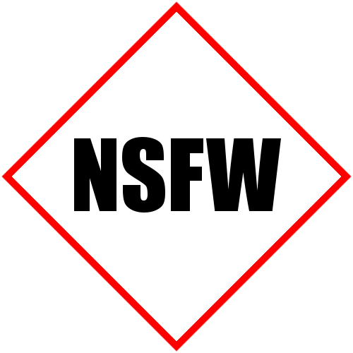

Pregunta 1: ¿Qué es la lost media?
Básicamente es material multimedia (en su mayoría videos) que se sabe que existe en base a escasa pero sólida evidencia, ya que muy pocas personas o nadie poseen por lo que es muy dificil de encontrar y se le considera "lost media" o "material perdido", un ejemplo sería un episodio perdido de una serie que fue transmitido una sola vez por lo inédito o inapropiado que fue.
Pregunta 2: ¿QUE ES NSFW Y NSFL EN LA LOST MEDIA (+18)?
NSFW: NSFW son las siglas de la expresión en inglés Not safe/suitable for work, que significa literalmente que «no es seguro/apropiado para el trabajo». Se utiliza en foros, IRC, blogs o páginas web para advertir de que determinado contenido puede ser inadecuado para su visualización en el trabajo, generalmente por ser pornográfico, sangriento, violento u ofensivo.

NSFL:Cualquier material de tipo NSFL (Not Safe For Life), no es recomendable para nadie. Toca temas de naturaleza cruda y explícita que puede afectar la sensibilidad de algunas personas, se recomienda discreción. Recomendamos ser mayores de 18+ para visitar esta sección. Si eres una persona muy susceptible, abstente de visitar esta categoría.